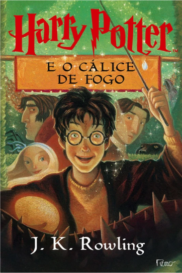
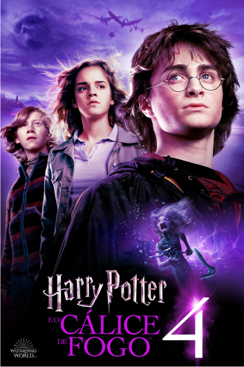

Livro 4
Harry Potter e o Cálice de Fogo
Resumo
De volta aos Dursley, Harry Potter, em um sonho, assiste Lorde Voldemort matar Frank Bryce, e acorda com sua cicatriz doendo. Os Weasleys então resgatam Harry e Hermione Granger de suas casas e os levam para a Copa do Mundo de Quadribol usando uma Chave de Portal para assistir a partida de Irlanda contra Bulgária. Lá, Harry conhece Cedrico Diggory, que está no jogo com seu pai. Depois da partida, os seguidores de Voldemort — nomeados Comensais da Morte — atacam o local, causando estragos e mortes. Eles conjuram a Marca Negra no céu, o que gera pânico em todos, pois é a primeira vez que é vista em treze anos. Após Harry perder sua varinha durante o caos do ataque, Winky, a elfa doméstica de Bartolomeu Crouch, é falsamente acusada de ter lançado a marca após ser vista segurando o objeto, que é revelado ter sido usado para lançá-la. Hermione, inconformada com a injustiça, forma um fundo de apoio com o intuito de promover os direitos dos elfos domésticos.
Em Hogwarts, o professor Dumbledore anuncia que Alastor "Olho-Tonto" Moody será o novo professor de Defesa Contra as Artes das Trevas do ano, e que Hogwarts irá realizar o Torneio Tribruxo, dando um prêmio de mil galeões ao vencedor.De volta aos Dursley, Harry Potter, em um sonho, assiste Lorde Voldemort matar Frank Bryce, e acorda com sua cicatriz doendo. Os Weasleys então resgatam Harry e Hermione Granger de suas casas e os levam para a Copa do Mundo de Quadribol usando uma Chave de Portal para assistir a partida de Irlanda contra Bulgária. Lá, Harry conhece Cedrico Diggory, que está no jogo com seu pai. Depois da partida, os seguidores de Voldemort — nomeados Comensais da Morte — atacam o local, causando estragos e mortes. Eles conjuram a Marca Negra no céu, o que gera pânico em todos, pois é a primeira vez que é vista em treze anos. Após Harry perder sua varinha durante o caos do ataque, Winky, a elfa doméstica de Bartolomeu Crouch, é falsamente acusada de ter lançado a marca após ser vista segurando o objeto, que é revelado ter sido usado para lançá-la. Hermione, inconformada com a injustiça, forma um fundo de apoio com o intuito de promover os direitos dos elfos domésticos.
Em Hogwarts, o professor Dumbledore anuncia que Alastor "Olho-Tonto" Moody será o novo professor de Defesa Contra as Artes das Trevas do ano, e que Hogwarts irá realizar o Torneio Tribruxo, dando um prêmio de mil galeões ao vencedor.Porém, apenas aqueles maiores de dezessete anos são permitidos a participar. É a primeira vez em um espaço de 202 anos que o Torneio será realizado. Estudantes da Academia de Magia Beauxbatons e do Instituto Durmstrang, outras escolas de magia, viajam para Hogwarts, onde ficarão por um ano, com o objetivo de competir no torneio. No Dia das Bruxas, o Cálice de Fogo sorteia três nomes (um de cada escola): Fleur Delacour da Acadêmia Beauxbatons; Viktor Krum (também apanhador do time de quadribol da Bulgária) do Instituto Durmstrang; e Cedrico Diggory de Hogwarts, para competirem no campeonato. Porém, o cálice sorteia um nome a mais, Harry Potter, levando a suspeita e indignação de todos. Rony inveja Harry e se recusa a falar com ele.
Hagrid conta a Harry que a primeira tarefado torneio envolve dragões, e como os diretores de Fleur e Krum também já sabiam e iriam certamente contá-los, Harry informa Cedrico. Na tarefa, Harry tem que passar por um dragão Rabo-Córneo Húngaro para pegar um ovo de ouro. O garoto realizou a prova com a ajuda de sua vassoura e ficou empatado na primeira colocação com Krum. Mais tarde, Rony se reconcilia com Harry por entender o grande perigo do torneio. Quando Harry abre o ovo, ele começa a soltar um insuportável grito agourento. Hermione leva Harry e Rony as cozinhas da escola, onde os elfos domésticos trabalham. Lá, eles retornam a ver Winky, que está muito perturbada e lutando para superar a perda de seu saque. Eles também conhecem o velho amigo de Harry, Dobby, que foi contratado pela escola para trabalhar na cozinha; ele é o único elfo que prefere a liberdade ao invés de trabalhar duro. Enquanto isso, a repórter "fofoqueira" Rita Skeeter escreve artigos mentirosos e escandalosos sobre as pessoas de Hogwarts, incluindo Hermione, Harry, Hagrid e Madame Maxime (diretora de Beauxbatons), e os publica no Profeta Diário.
Com o baile de inverno se aproximando, Harry tenta encontrar um par de dança, e quando finalmente convida Cho Chang, Cedrico já havia feito primeiro, então Harry e Rony convidam as gêmeas Parvati e Padma Patil. Rony fica com ciúmes de Hermione após vê-la com Krum. No baile, Cedrico dá uma dica a Harry sobre o ovo, dizendo para levá-lo ao banheiro dos monitores. Ele leva o ovo ao banheiro, onde a Murta-Que-Geme o diz para ouvir o objeto debaixo da água;] lá, as palavras se tornam compreensíveis. Harry então descobre que a próxima tarefa é alguma coisa relacionada a resgatar algo que ele irá "perder dolorosamente". Quando Harry descobre que a segunda tarefa no Lago Negro, ele começa a procurar por feitiços que o farão respirar debaixo da água. Na manhã do dia da tarefa, Harry ainda não havia encontrado nenhuma solução, porém Dobby o entrega uma planta chamada guelricho, que faz com que o garoto crie brânquias. Potter completa a tarefa resgatando Rony do fundo do lago. Quando percebe que ninguém regataria Gabrielle, irmã de Fleur (que havia sido desclassificada), ele se arrisca e também a salva. Depois da apuração dos juízes, mesmo ficando na última colocação, ele ganha pontos suficientes para empatar com Cedrico.
Um mês antes da tarefa final, Harry e Krum conversavam quando encontraram Crouch, que parecia estar louco, e diz a Harry para chamar Dumbledore imediatamente. Deixando Krum com Crouch, Harry procura o diretor, porém quando retorna, encontra Viktor atordoado e Crouch morto. Potter volta a se preparar para a última tarefa: um labirinto. Dentro do labirinto, Harry é obrigado a nocautear Krum, que havia sido enfeitiçado, para salvar Cedrico. Trabalhando juntos, os dois alcançam a taça. Eles concordam em tocá-la ao mesmo tempo, e quando tocam, descobrem que é uma Chave de Portal que os leva a um cemitério. No local, Pedro Pettigrew mata Cedrico e usa o sangue de Harry, sua própria mão e um osso do pai de Tom Riddle para ressuscitar Lorde Voldemort.
Voldemort convoca seus Comensais da Morte, repreendendo-os por pensarem que estava morto e abandoná-lo. Ele revela que tem um único "servo fiel" escondido em Hogwarts, que estava trabalhando em assegurar que Harry chegasse ao cemitério. Voldemort e Harry tem um duelo de varinhas. Porém, quando os dois lançam feitiços um contra o outro, suas varinhas se conectam devido a seus núcleos serem idênticos. Durante o duelo, algumas vítimas de Voldemort, incluindo os pais de Harry e Cedrico, emergem de sua varinha e distraem o bruxo para que Harry consiga fugir de volta à Hogwarts usando novamente a Chave de Portal; ele leva o corpo de Cedrico consigo.
Quando ele retorna, Moody o leva para sua sala e revela ser o "servo fiel" de Voldemort. Ele declara ser a pessoa que colocou o nome de Harry no Cálice de Fogo. Antes de Moody conseguir matar Harry, entram na sala Dumbledore, McGonagall e Snape. Eles então descobrem que Moody é, na verdade, Bartô Crouch Jr., filho de Crouch, disfarçado através de Poção Polissuco. Anos antes, Crouch havia sentenciado seu filho a prisão perpétua na prisão de Azkaban por ter ligações com os Comensais da Morte, porém conseguiu escapar após ter trocado de lugar com sua falecida mãe. Crouch Jr. foi quem conjurou a Marca Negra na Copa do Mundo de Quadribol para assustar os Comensais que ele acreditava ter abandonado Voldemort. Eventualmente, o Lorde das Trevas entrou em contato com seu fiel e o personificou de Moody como parte de seu plano. Crouch Jr. também admitiu ter matado seu pai para impedi-lo de contar a Dumbledore sobre Voldemort. O verdadeiro Moody é encontrado dentro de um baú encantado. Harry é declarado como o ganhador do Torneio Tribruxo e recebe o prêmio.
Muitas pessoas, incluindo o Ministro da Magia Cornélio Fudge, não acreditam em Harry e Dumbledore sobre o retorno de Voldemort, e como Crouch Jr. já havia recebido o Beijo do Dementador, não foi possível usá-lo como testemunha. Hermione descobre que Rita Skeeter é ilegalmente uma animago, podendo se transformar em um besouro. Através de chantagens, a garota obriga Skeeter a parar de escrever suas histórias difamatórias. Por não querer seu prêmio do torneio, Harry dá a Fred e George todo o dinheiro ganho para que comecem sua loja de truques, e volta para casa de seus tios.
Poster do Filme
Trailer
Curiosidades
- O torneio Tribruxo, que é uma parte importante da trama deste livro, foi inspirado em uma tradição escocesa chamada Highland Games, onde os competidores participam de uma série de eventos físicos e mentais. Rowling disse que também se inspirou nos Jogos Olímpicos para criar o torneio.
- O nome "Cedrico Diggory", um personagem que é introduzido neste livro, foi inspirado em um aluno que J.K. Rowling conheceu quando era professora em Portugal. Ela disse que o nome "soava como um herói" e decidiu usá-lo na história.
- Este livro contém a morte mais chocante da série: a morte de Cedrico Diggory. Rowling disse que queria mostrar aos leitores que a série não era apenas uma fantasia alegre, mas também poderia ser sombria e realista. A morte de Cedrico também é um ponto crucial na trama da série, pois é o evento que finalmente traz Voldemort de volta à plena força.